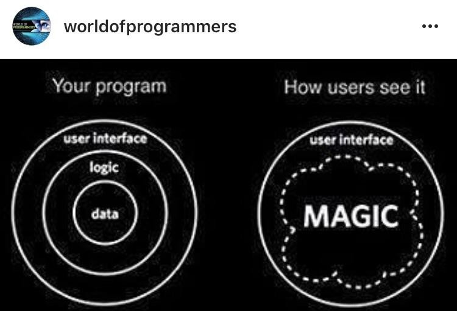

I was working on my first web application when I started noticing the differences between web dev. and Android dev. Now obviously they are for different systems and devices as well as being written in different languages. But I'm not going to be talking about those differences. I'm talking about differences in the way they are made.
The first thing that I noticed in the difference between web dev and android dev was that they use two different markup languages, or formatting languages. HTML and XML are actually very similar. They both determine how the page's elements are ordered and what those elements are. However, one major difference that I have run into was that in XML, the tags seemed to be a little more intuitive. It is a lot easier to understand what a TextView is than it is to understand what a small (commonly used as captions to images) is. Another big difference is that if you are going to be doing a lot of styling changes, HTML needs to have at least one css page attached to it, whereas Android XML can do all of the styling inside the elements, no new page required. Finally, in XML there are some styling options that are required for each element. For example, a LinearLayout requires the layout width and height as well as the orientation. HTML may have this as well, but the difference is that HTML has default settings and Android XML does not.
Source: http://blue-chip.infoThe biggest issue that I ran into while I was developing my web application was how to pass the data from the first screen to the next. I didn't want to use a database or some sort of server because all I needed was 4 variables inside an object. That was it, but everything that I saw said that I couldn't pass the object as it was. I had to convert it from a JSON to a string and then store it in the local storage only to get to the next page and retrieve the string from local storage and convert that string back into a JSON. I thought that this had solved the issue; that I would be able to use that object the way that it was intended (the objects methods included). But that wasn't the case. I was testing my application and noticed that the player's character wasn't updating it's health or magic points the way that it needed to. So I looked in the console and there it was, a big, red box that said that the method that I was trying to call didn't exist. I was astounded. I looked in my Character class and there was the method, plain as day! And to top it all off, the opponent's variables were changing the way that they were supposed to, which was using that same method. So, how can one Character object be working correctly and the other Character object has no record of the method? Well, the answer, as I found out after much frustration, is simple. When I converted the player's character back to a JSON from a string, it kept all the variables in that Character, but didn't classify it as a Character. In other words, my "character" object was not a Character. It was just an object with the same variables, but it did not include any of the methods. To fix this, I had to convert the string into a JSON and then convert that JSON into a Character by constructing a whole new Character with the same variables. A simple fix, but one that definitely wasn't obvious. Android doesn't have this problem. You stick your object into an intent and send it off to the next screen. Easy peasy.
So, now that we have tackled the issue of sending objects from one screen to another. I want to focus on databases. I didn't need a database for my first applications, web or Android, but the issue isn't going to stay away for long. In an Android application, if you don't want to have to start completely over every time you open the app (or it needs to be persistant in other words), you need a database to store your information, depending, of course, on what the app is about. But the great thing about Android is that you don't have to use some internet based database or server if you don't want to. You can create a database in the local storage of the phone. Now, granted, you do not want to do this if your app has a lot of data that you need to store, but for something small, it is perfect. Web applications, however, need to have an internet based database or server to store any amount of data over 4kb (the maximum size of a cookie)! That is smaller than the HTML page for my first blog post!
 Source: https://hackernoon.comTo sum this all up, there are a great many things that are common to both Android and Web applications, but the differences aren't always obvious. While working on my first applications to both Android and Web were frustrating in many ways (as we all know, a program never works the right way the first time), knowing Android programming before learning web dev actually seemed to make it a little bit easier. I already knew Java (JavaScript isn't vastly different) and I already knew XML. It was just a small jump to learn the elements of web dev.